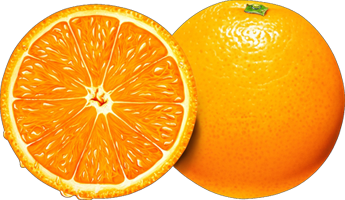

Tenemos una variedad de productos a la venta pero tenemos los mejores a disposicion del comprador para hacer su compra mas rapida.
Frescas, jugosas y naturalmente dulces. Ricas en vitamina C y antioxidantes, perfectas para jugos, postres o disfrutar al natural. Energía y salud en cada gajo.
Dulces, crujientes y llenas de antioxidantes. Nuestras uvas frescas son el snack ideal o el complemento perfecto para tus platos. Salud y sabor en cada racimo.
Exóticas, nutritivas y deliciosas. La guayabana es rica en vitaminas y beneficios para tu salud. Ideal para jugos, batidos o comer al natural. Un superalimento tropical.
Tenemos una variedad de frutas frescas recien extraidas del campo para poder ser vendidas a ustedes, recuerden que nuetra prioridad es hacerlos sentir bien con la empresa.
Nuestras naranjas frescas son seleccionadas cuidadosamente para ofrecerte lo mejor de la temporada. Son jugosas, de sabor dulce y refrescante, ideales para preparar jugos naturales, batidos o disfrutarlas como un snack saludable. Ricas en vitamina C, estas naranjas te ayudarán a fortalecer tu sistema inmunológico y a mantener una piel sana y radiante.

Las uvas frescas que ofrecemos son perfectas para un momento de frescura y sabor. Con un equilibrio ideal entre dulzura y acidez, son perfectas para comer solas, añadir a ensaladas o hacer deliciosos postres. Además, las uvas son una excelente fuente de antioxidantes, que contribuyen a tu bienestar general y a mantener tu corazón saludable.

Disfruta de la dulzura y frescura de nuestras guayabas, cargadas de nutrientes esenciales. Con su delicioso sabor tropical, son una excelente opción para preparar jugos, batidos o disfrutar en postres. Ricas en fibra y vitamina C, las guayabas no solo mejoran la digestión, sino que también ayudan a fortalecer tu sistema inmunológico y a mantener una piel saludable.

Lo que nuestros clientes dicen sobre la frescura y sabor de nuestras frutas